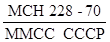
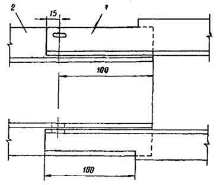
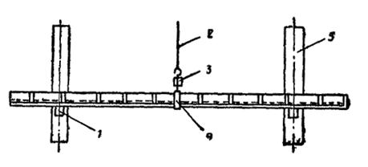
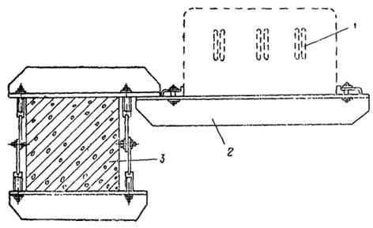
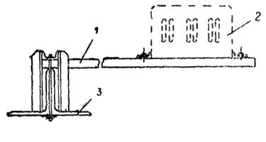
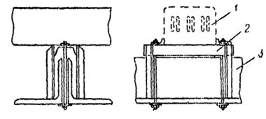
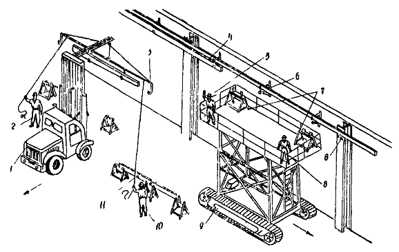
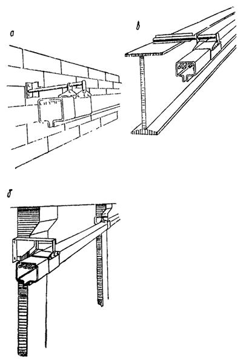
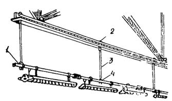
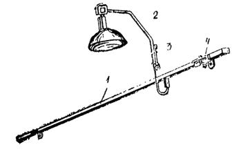

МИНИСТЕРСТВО МОНТАЖНЫХ И СПЕЦИАЛЬНЫХ
СТРОИТЕЛЬНЫХ РАБОТ СССР
УТВЕРЖДАЮ:
зам. министра монтажных
и специальных строительных
работ СССР
30 июня 1976 г.
ИНСТРУКЦИЯ
ПО МОНТАЖУ ШИНОПРОВОДОВ
НАПРЯЖЕНИЕМ ДО 1000 В
ВСН 363-76
ММСС СССР
Москва 1977
Изложена технология монтажа комплектных шинопроводов переменного и постоянного тока, выпускаемых заводами Главэлекромонтажа, а также вопросы монтажа открытых шинопроводов (магистралей из алюминиевых шин).
Даны указания по монтажу шинопроводов при конвейерном методе сборки блоков покрытия производственных зданий.
С выходом настоящей инструкции отменяются «Инструкция по монтажу магистральных шинопроводов» МСН 228-70/ММСС СССР; «Временная инструкция по монтажу троллейных шинопроводов ШТМ70» ВСН 298-72/ММСС СССР; «Временная инструкция по монтажу осветительных шинопроводов ШОС67» МСН 213-69/ММСС СССР.
Инструкция разработана ВНИИпроектэлектромонтажем и предназначена для инженерно-технических работников и квалифицированных рабочих электромонтажных организаций Минмонтажспецстроя СССР.
Составители: Г. Л. Родионов, В. Л. Томашпольский
|
Минмонтажспецстрой СССР |
Ведомственные строительные нормы |
ВСН 363-76 ММСС СССР |
|
|
Взамен  |
|||
|
Инструкция по монтажу шинопроводов напряжением до 1000 В |
|||
|
ВСН 298-72 ММСС СССР |
|
||
|
МСН 213-69 ММСС СССР |
|
1.1. В настоящей инструкции изложены указания по монтажу:
цеховых электрических сетей переменного тока напряжением до 1000 В, выполняемых комплектными магистральными и распределительными шинопроводами (ГОСТ 6815-70), комплектными троллейными и осветительными шинопроводами, а также открытыми шинопроводами (магистралями из алюминиевых шин);
электрических сетей общепромышленных установок постоянного тока напряжением до 1200 В, выполняемых комплектными шинопроводами постоянного тока (ГОСТ 19263-73).
1.2. В инструкции учтены комплектные шинопроводы постоянного и переменного тока всех модификаций, освоенные и выпускаемые заводами треста Электромонтажконструкция Главэлектромонтажа Минмонтажспецстроя СССР, по состоянию на 1 января 1975 г.
1.3. В связи с отсутствием различий в технологии монтажа комплектных магистральных шинопроводов переменного и постоянного тока указания по монтажу этих шинопроводов объединены в подразделе «Магистральные шинопроводы переменного и постоянного тока» (пп. 2.16-2.53).
|
Внесены ВНИИпроектэлектромонтажем |
Утверждены Минмонтажспецстроем СССР 30 нюня 1976 г. |
Срок введения 1 января 1977 г. |
2.1. Комплектным шинопроводом называется устройство, предназначенное для передачи и распределения электроэнергии, состоящее из голых или изолированных шин различного профиля, заключенных в защитную оболочку, со всеми относящимися к нему ответвительными устройствами, поддерживающими и крепежными конструкциями.
2.2. По назначению комплектные шинопроводы подразделяются на следующие группы:
магистральные, предназначенные для передачи электроэнергии от цеховых подстанций до распределительных шинопроводов и силовых распределительных пунктов;
распределительные, предназначенные для передачи электроэнергии к электроприемникам;
троллейные*, предназначенные для передачи электроэнергии к подвижным электроприемникам;
осветительные, предназначенные для передачи электроэнергии к светильникам и электроприемникам малой мощности.
* Закрытые троллейные шинопроводы с пластмассовыми изоляторами всех серий необходимо применять в помещениях с нормальной средой, не содержащей токопроводящей пыли, с температурой не выше 40 °С. Длина непрерывной линии троллейных шинопроводов должна быть не более 100 м. Для трасс большей длины необходима установка компенсационной секции, которая должна быть предусмотрена в проекте для компенсации линейных расширений.
2.3. В комплект поставки шинопроводов в соответствии с заказной спецификацией должны входить поддерживающие и крепежные конструкции для крепления шинопроводов к строительным основаниям.
2.4. Условия хранения поступающих с завода-изготовителя шинопроводов должны соответствовать группе С ГОСТ 15150-69.
2.5. Вскрывать ящики допускается только со стороны, отмеченной надписью «верх», непосредственно перед сборкой секций магистральных шинопроводов в блоки в мастерской электромонтажных заготовок (МЭЗ) или остальных видов шинопроводов в зоне монтажа.
2.6. При извлечении из ящиков и переноске секций подъемными механизмами следует применять траверсы и чалочные приспособления, что обеспечит сохранность шинопроводов.
2.7. Распакованные секции следует укладывать на деревянные настилы или бруски не более чем в пять рядов по вертикали. Между рядами помещают прокладки в виде деревянных брусков или картона. При этом все шинопроводы, кроме распределительных, следует укладывать в положение, соответствующее рабочему.
2.8. Транспортировать блоки и секции от места сборки до зоны монтажа следует на автомобилях с прицепом или удлиненным кузовом (полуприцепом) в специальных контейнерах (приложение 1, рис. 1), предохраняющих их от механических повреждений.
2.9. Монтаж комплектных шинопроводов выполняют в соответствии с рабочим проектом. При значительных объемах работ (на цех, корпус) разрабатывают проект производства электромонтажных работ (ППР).
2.10. Рабочий проект цеховых электрических сетей, выполняемых комплектными шинопроводами, должен предусматривать монтаж шинопроводов индустриальными методами и содержать следующие данные:
план сети шинопроводов объекта;
необходимые разрезы с нанесением трассы прокладки шинопроводов, указанием отметок, видов прокладки (по стенам, колоннам и т.д.) и типовых крепежных конструкций, изготовляемых заводами Главэлектромонтажа.
В тех случаях, когда шинопровод устанавливают на нетиповые конструкции, необходимо дать чертежи установки узла шинопровода и рабочие чертежи крепежной конструкции. Проект должен содержать заявочные спецификации только на комплектные линии по каждому отдельному объекту (линия, цех, корпус). При прохождении линий магистральных шинопроводов по сложным трассам, в нескольких плоскостях, следует выдавать аксонометрические чертежи этих линий с указанием привязочных размеров.
2.11. Проектная документация должна иметь штамп с грифом «Разрешено к производству работ» и подпись ответственного представителя предприятия-заказчика.
Состав ППР должен соответствовать руководству [12].
2.13. ППР по монтажу магистральных шинопроводов должен состоять из двух частей:
1) подготовительно-заготовительные работы, выполняемые в МЭЗ;
2) работы, выполняемые в монтажной зоне.
ППР по монтажу остальных видов комплектных шинопроводов должен состоять из одной части.
2.14. При разработке ППР необходимо пользоваться действующими альбомами типовых рабочих чертежей деталей и узлов промышленных электроустановок ГПИ Тяжпромэлектропроект им. Ф. Б. Якубовского.
2.15. Монтаж комплектных шинопроводов производят при строительной готовности помещения в условиях, полностью обеспечивающих защиту шинопроводов от механических повреждений и загрязнений при производстве дальнейших строительно-монтажных работ.
Приемку помещений под монтаж следует оформлять актом.
2.16. Монтаж магистральных шинопроводов выполняют в два этапа:
подготовительные работы;
монтажные работы.
2.17. В процессе подготовительных работ в соответствии с п. 2.12 настоящей инструкции разрабатывают ППР, выполняют заготовку блоков шинопровода, а также нетиповых крепежных и других изделий в условиях МЭЗ, подготавливают необходимые для монтажа шинопровода механизмы и приспособления.
кантователи секций, позволяющие поворачивать блоки длиной до 13,5 м и сваривать стыки шин с двух сторон;
стенды для изолирования стыков и установки крышек;
сварочные посты с кондукторами для сварки стыков шин;
грузоподъемные механизмы и чалочные приспособления (траверсы, захваты);
стеллажи-накопители для складирования готовых блоков шинопровода.
Пример оснащения технологической линии сборки секций магистрального шинопровода в блоки приведен на рис. 1.
2.19. Длины блоков шинопровода определяют в ППР в зависимости от места и условий прокладки; наиболее целесообразно комплектовать блоки длиной до 12 м.
Блоки, состоящие из прямых и угловых секций, следует комплектовать таким образом, чтобы угловые секции были расположены на концах блока.
2.20. Перед сборкой секций шинопровода в блоки их необходимо очистить от пыли, проверить состояние кожуха и отдельных деталей шинопровода, зачистить кромки концов шин металлической щеткой и обезжирить ацетоном (ГОСТ 2603-71) или авиационным бензином (ГОСТ 1012-72), после чего уложить на кантователь.
2.21. Шины секций магистральных шинопроводов соединяют болтовыми сжимами или сваркой.
Рис. 1. Технологическая линия сборки магистральных шинопроводов ШМА68 и ШМА73:
1 - контейнер; 2 - тележка; 3 - рольганг; 4 - стеллаж-накопитель; 5 - стойка; 6 - кантователь секций; 7 - баллон; 8 - агрегат ВСК-300; 9 - полуавтомат ПРМ-4; 10 - зона консервации; 11 - зона окончательной сборки; 12 - зона сварки; 13 - зона предварительной сборки; 14 - зона заготовок
Болтовые сжимы устанавливают на присоединительных и тройниковых секциях, а также в местах, где по каким-либо причинам невозможно производство сварочных работ. При этом необходимо учитывать, что болтовые сжимы поставляют в объеме, не превышающем 30 % общего числа прямых и специальных секций, поступающих с завода. Во всех остальных случаях шины секций следует соединять сваркой.
2.22. При соединении секций следует контролировать положение концов шин: внутренняя поверхность крайней шины с большим плечом изгиба («уткой») одной секции должна прилегать к наружной поверхности крайней шины с меньшим плечом изгиба другой секции (рис. 2).
Рис. 2. Расположение шин при соединении секций магистрального шинопровода:
1 - секция с меньшим плечом изгиба; 2 - секция с большим плечом изгиба
Шины подгоночных секций обрезают с концов, не имеющих изгибов (вразбежку).
2.23. Сварку шин производят в соответствии с инструкцией [8]. Рекомендуется применять полуавтоматическую сварку в защитном газе плавящимся электродом с использованием полуавтомата ПРМ, а в случае отсутствия этого автомата сварку в защитном газе неплавящимся (вольфрамовым) электродом с использованием установок УДАР или УДГ промышленного изготовления либо сварочных постов, собираемых силами монтажных организаций из стандартного сварочного оборудования.
Применение сварки угольным электродом с присадкой под слоем флюса ВАМИ допускается лишь в исключительных случаях при отсутствии названного сварочного оборудования. При этом после окончания сварки особое внимание необходимо обратить на удаление остатков флюса, которые при наличии влаги могут вызвать коррозию алюминия и привести к частичному или полному разрушению сварных соединений.
2.24. Сваривать изолированные шины на ребро в целях предотвращения перегрева шин и порчи изоляции следует при минимальном нагреве. Длительность сварки одного соединения не должна превышать 1 мин. Следует применять специальный сварочный кондуктор с формующими графитовыми пластинами (рис. 3) для возможности установки в месте сварного стыка ответвительной секции. Для предотвращения стекания расплавленного алюминия места у концов шин следует защищать влажным асбестом.
Рис. 3. Кондуктор для сварки шин:
1 - свариваемые шины; 2 - рамка кондуктора; 3 - формующие графитовые пластины; 4 - центрующий шкворень с зажимным эксцентриком
2.25. Свариваемые шины в процессе сварки и застывания металла не должны подвергаться сотрясениям, так как это может привести к разрыхлению металла и появлению трещин, что резко снижает механическую прочность и электропроводность соединения.
2.26. Сварку шин установленных блоков и секций выполняют с одной стороны. Обязательным условием при этом является создание наплавленного (контролируемого) шва, не уменьшающего сечения шин в месте соединения, т.е. равного по высоте толщине шины (выше кромки шины) и имеющего длину не менее ширины шины (рис. 4).
2.27. Опорные уголки, являющиеся нулевыми проводниками шинопроводов ШМА68, должны быть приварены внахлест на длину, равную сумме сторон уголка; при этом у накладываемого уголка полки срезают на 8-10 мм (рис. 5, 6).
У шинопроводов ШМА73 несущие боковины, являющиеся нулевыми проводниками, соединяют накладкой на шести болтах (рис. 7).
2.28. Электрическую изоляцию стыка шин при установке шинопроводов в помещениях с нормальной средой осуществляют полимерным изоляционным кожухом (рис. 8, 9).
2.29. При отсутствии таких кожухов допускается изолировать стыки шин стеклолакотканью: для изоляции сварных соединений без ответвлений оголенную часть шин обматывают стеклолакотканью в два слоя; для изоляции сварных соединений с ответвлением последовательно наклеивают два полотна стеклолакоткани длиной L, как показано на рис. 10-12; при этом кромки полотен, выходящие за пределы шин, склеивают между собой, а места примыкания вновь наложенной и заводской изоляции дополнительно покрывают полоской стеклолакоткани шириной 40 мм; приклеивать стеклолакоткань к шинам и склеивать слои между собой следует клеем № 88 при положительной температуре, что обеспечит прочность соединения.
Рис. 4. Сварное соединение алюминиевых шин магистрального шинопровода:
1 - прямая секция; 2 - ответвительная или тройниковая секция; 3 - шины ответвительной или тройниковой секции

Рис. 5. Подготовка и стыковка перед сваркой уголка и перемычки на смонтированном шинопроводе:
1 - перемычка; 2 - уголок секции
Рис. 6. Сварка опорных уголков шинопроводов серии ШМА:
1 - накладка; 2 - стяжная шпилька стяжного ярма; 3 - опорный уголок секции; 4 - шины
Размеры изоляции сварных стыков прямых секций, секций с ответвлениями и концов шин крайней секции приведены соответственно в табл. 1, 2, 3.
Рис. 7. Соединение нулевых проводников при стыковке секций:
1 - алюминиевая накладка; 2 - стальная накладка; 3 - нулевой проводник (боковой профиль); 4 - центральная часть, выбиваемая при соединении шин болтовым сжимом
Рис. 8. Полимерный изоляционный кожух для сварных соединений без ответвлений:
1 - верхняя половина кожуха; 2 - охватывающий замковый элемент; 3 - нижняя половина кожуха
Рис. 9. Установка полимерного изоляционного кожуха
Рис. 10. Сварное соединение прямых секций, изолированное стеклолакотканью:
1 - полотно из стеклолакоткани; 2 - лента из стеклолакоткани 0,15×40×L; 3 - изоляция шин; 4 - изоляционные вкладыши (уплотнения)
Рис. 11. Сварное соединение секций с ответвлением, изолированное стеклолакотканью:
1 - пакет из трех шин; 2 - два слоя полотна; 3 - пакет из шести (пяти) шин; 4 - лента из стеклолакоткани 0,15×40×L; 5 - изоляционные вкладыши (уплотнения)
Рис. 12. Концы шин крайней секции, изолированные стеклолакотканью:
1 - склеиваемые кромки полотна; 2 - изоляционные вкладыши (уплотнения); 3 - лента из стеклолакоткани
2.30. Противокоррозионная защита и электрическая изоляция стыка шин при установке шинопровода ШМА68Х-Н в помещениях с химически активной средой и токопроводящей пылью осуществляется стеклолакотканью на клее № 88 наносимом на прилегающую к шинам поверхность стеклолакоткани.
2.31. После изолирования стыков места соединения следует закрыть крышками.
2.32. Блоки шинопровода, устанавливаемые на объектах с незаконченной строительной готовностью, где возможно попадание влаги, краски и пыли в процессе дальнейших строительно-монтажных работ, должны быть обернуты полиэтиленовой пленкой.
Таблица 1
|
Номинальный ток, А |
Размеры (см. рис. 10), мм |
|||||
|
А |
В |
полотна |
L |
|||
|
ШМА68-Н |
ü |
1600 |
260 |
40 |
0,15×260×450 |
500 |
|
ШМА68Х-Н |
ý |
|||||
|
ШМА68У-Н |
þ |
|||||
|
ШМА73 |
1600 |
290 |
45 |
0,15×290×500 |
500 |
|
|
ШМА68-Н |
2600 |
300 |
60 |
0,15×300×600 |
680 |
|
|
ШМА59-Н |
4000 |
300 |
80 |
0,15×300×750 |
870 |
|
Таблица 2
|
Наименование ответвления |
Размеры полотна (см. рис. 11), мм |
Размер L, мм |
||||||||
|
для пакета из пяти-шести шин |
для пакета из трех шин |
|||||||||
|
Г |
Д |
К |
Л |
Г |
Д |
К |
Л |
|||
|
ШМА68-Н |
Секция тройниковая вертикальная |
- |
- |
- |
- |
- |
160 |
280 |
250 |
- |
|
ШМА68У-Н |
Секция ответвительная |
260 |
130 |
250 |
220 |
260 |
130 |
300 |
270 |
250 |
|
ШМА68Х-Н |
Секция ответвительная |
- |
130 |
- |
- |
- |
130 |
400 |
370 |
- |
|
ШМА59-Н |
Секция тройниковая вертикальная |
- |
300 |
160 |
360 |
330 |
210 |
350 |
320 |
350 |
|
Секция ответвительная |
- |
- |
130 |
- |
- |
130 |
- |
- |
- |
|
Таблица 3
|
Номинальный ток, А |
Размеры (см. рис. 12), мм |
||||
|
h |
полотна |
ленты |
|||
|
ШМА68-Н |
ü |
1600 |
40 |
170×450 |
40×500 |
|
ШМА68У-Н |
ý |
||||
|
ШМА68Х-Н |
þ |
||||
|
ШМА73 |
1600 |
45 |
210×500 |
35×500 |
|
|
ШМА68-Н |
2500 |
60 |
190×60 |
40×680 |
|
|
ШМА59-Н |
4000 |
80 |
200×750 |
40×790 |
|
При этом наиболее целесообразно доставлять блоки шинопровода в монтажную зону к моменту начала работ и вести монтаж «с колес», что позволит исключить промежуточное складирование.
Транспортировка блоков шинопровода должна осуществляться в соответствии с п. 2.8 настоящей инструкции.
2.34. В тех случаях, когда монтаж «с колес» невыполним блоки или секции шинопровода следует складировать на свободной площадке в зоне монтажа.
2.36. Расстояние по горизонтали между крепежными конструкциями для магистральных шинопроводов всех модификаций кроме ШМА73, не должно превышать 3 м. Шинопроводы ШМА73 рассчитаны на крепление с шагом в 6 м.
Длины вертикальных участков шинопроводов не должны превышать 20 м, а расстояния между точками крепления - 4 м.
2.37. Магистральный шинопровод в зависимости от места установки крепится на различных конструкциях (табл. 4).
Примеры прокладки магистрального шинопровода даны на рис. 13-18.
2.38. Секции с компенсаторами и гибкие секции следует монтировать на двух опорных конструкциях, симметрично расположенных по обе стороны компенсатора.
2.39. В местах прохода шинопровода сквозь стены или перекрытия следует устанавливать асбоцементные плиты.
Порядок монтажа, отличный от приведенного в пп. 2.35-2.40 инструкции, вызывает дополнительные подгоночные работы и не рекомендуется.
Таблица 4
|
Тип конструкций для крепления шинопроводов |
Место установки шинопроводов |
|||
|
ШМА73, 1600 А |
ШМАД70, ШМАДК70, 1600 и 2500 А |
ШМА68-Н, 2500 А; ШМА59-Н, 4000 А; ШМАД70, 4000 А; ШМАДК70, 6300 А |
||
|
Настенный кронштейн |
У2191 |
К881-1 |
К881-2 |
На стенах и колоннах |
|
Напольная стойка |
У2192, У2195 |
К882-1 |
К882-2 |
Над полом |
|
Кронштейн |
- |
К883-1 |
К883-2 |
На нижнем поясе железобетонных ферм, параллельно ферме |
|
Кронштейн |
- |
К884-1 |
К884-2 |
На нижнем поясе металлических ферм, параллельно ферме |
|
Стойка |
У2194 |
К885-1 |
К885-2 |
На нижнем поясе металлических ферм, перпендикулярно ферме |
|
Тросовый подвес |
У2193 |
К886-1 |
К886-2 |
На тросах или катанке (струнах) |
При подъеме блоков шинопровода следует использовать специальные траверсы (приложение 1, рис. 2).
2.42. Подъем блока или секций шинопровода на проектную отметку лебедкой выполняют следующим образом (рис. 19):
лебедку устанавливают в месте, с которого можно вести монтаж нескольких участков линии шинопровода;
подъемный ролик закрепляют по центру над местом установки шинопровода; при невозможности жесткого крепления ролик должен быть подведен в это положение оттяжками;
тяговый трос закрепляют по центру траверсы с блоком шинопровода и пропускают через подъемный ролик;
к концам траверсы привязывают веревки, которыми с нулевой отметки корректируют положение траверсы с блоком, обход препятствий и т.д.
Рис. 13. Прокладка магистрального шинопровода вдоль стены:
1 - дюбель с распорной гайкой; 2 - шинопровод; 3 - настенный кронштейн К881; 4 - стена

Рис 14. Прокладка магистрального шинопровода вдоль железобетонных колонн:
1 - настенный кронштейн К881; 2 - стальная проволока ПСО-4; 3 - муфта натяжения НМ-100; 4 - тросовый подвес К886; 5 - колонна
2.43. Монтаж шинопроводов на высоте до 8,5 м в помещениях со стесненными условиями (например, насыщенных технологическим оборудованием) рекомендуется выполнять с подъемника «Темп».

Рис. 15. Прокладка магистрального шинопровода вдоль нижнего пояса железобетонных ферм:
1 - шинопровод; 2 - кронштейн К883; 3 - нижний пояс железобетонной фермы

Рис. 16. Прокладка магистрального шинопровода вдоль нижнего пояса металлических ферм:
1 - кронштейн К884; 2 - шинопровод; 3 - нижний пояс металлической фермы

Рис. 17. Прокладка магистрального шинопровода поперек нижнего пояса металлических ферм:
1 - шинопровод; 2 - стойка К885; 3 - нижний пояс металлической фермы
Рис. 18. Прокладка магистрального шинопровода на напольных стойках:
1 - напольная стойка К882 (или У2132); 2 - шинопровод
Рис. 19. Монтаж блоков магистрального шинопровода с использованием лебедки:
1 - крепежная конструкция; 2 - подъемный ролик; 3 - траверса; 4 - электромонтажники третьего и четвертого разрядов; 5 - веревочная оттяжка (пеньковый канат диаметром 11 мм); 6 - электромонтажник шестого разряда; 7 - автогидроподъемник АГП-12А (АГП-15); 8 - двухосный прицеп; 9 - контейнер; 10 - электромонтажник третьего разряда; 11 - рама для установки лебедки; 12 - электромонтажник шестого разряда; 13 - лебедка с электроприводом
Рис. 20. Монтаж блоков шинопровода с использованием самоходных выдвижных подмостей ПВС-8 (ПВС-12):
1 - автопогрузчик; 2 - электромонтажник второго разряда; 3 - веревочная оттяжка (пеньковый канат диаметром 7 мм); 4 - траверса; 5 - контейнер; 6 - электромонтажник шестого разряда; 7 - крепежная конструкция; 8 - электромонтажники третьего и четвертого разрядов; 9 - козлы; 10 - самоходные выдвижные подмости ПВС-8 (ПВС-12); 11 - электромонтажник третьего разряда; 12 - двухосный прицеп
2.44. Монтаж шинопроводов на высоте до 6 м в помещениях с нестесненными условиями производят с самоходных выдвижных подмостей ПВС (рис. 20) или телескопических катучих подмостей ПТК.
2.45. При наличии в Монтажной зоне автокрана его следует использовать для монтажа шинопровода (рис. 21).
2.46. При монтаже опорных конструкций и вертикальных участков шинопровода наряду с указанными средствами механизации можно использовать автопогрузчик со специальной монтажной площадкой (рис. 22, 23).
2.48. Операции по стыковке смежных секций (блоков), установленных на проектной отметке, следует выполнять аналогично изложенному в пп. 2.21-2.31 настоящей инструкции. При этом в отверстие для стяжного болта необходимо с целью фиксации вставлять оправку, представляющую собой отрезок трубы соответствующего диаметра.
Рис. 21. Монтаж блоков магистрального шинопровода с использованием автокрана АК-7,5 (МКА-10):
1 - автокран АК-7,5 (МКА-10); 2 - электромонтажник второго разряда; 3 - лестница Л-312; 4 - электромонтажник четвертого разряда; 5 - траверса; 6 - электромонтажник третьего разряда; 7 - электромонтажник шестого разряда; 8 - крепежная конструкция; 9 - контейнер; 10 - двухосный прицеп; 11 - электромонтажник третьего разряда; 12 - веревочная оттяжка (пеньковый канат диаметром 11 мм)
2.49. Секции шинопровода можно стыковать также болтовыми сжимами в соответствии с п. 2.21 настоящей инструкции.
Перед сборкой болтового сжима следует подготовить контактные поверхности шин в соответствии с требованиями инструкции [7].
2.50. Сборку болтового сжима осуществляют в следующем порядке (рис. 24):
после подготовки контактных поверхностей шин совмещают концы стыкуемых секций, обеспечив точное совпадение отверстий и правильное положение изгибов. Эту операцию выполняют стальным направляющим стержнем с конусной заточкой;
трубчатый изолятор вставляют в отверстия двух крайних шин, а два круглых изолятора и шайбы (рис. 25) - в просвет между этими двумя шинами и следующей группой шин;
трубчатый изолятор продвигают в отверстия шайб, круглых изоляторов и следующей группы шин;
на концы трубчатого изолятора надевают гетинаксовые прокладки и изоляторы с шайбами;
подготовляют контактную поверхность у отверстия для присоединения заземляющей перемычки (рис. 26); на цилиндрическую часть малой гайки, предварительно навернутой на шпильку и раскерненной, надевают заземляющую перемычку и опорную шайбу, после чего шпильку вставляют в отверстие трубчатого изолятора;
на свободный конец шпильки надевают вторую опорную шайбу;
на цилиндрическую часть большой гайки надевают тарельчатые пружины, затем навертывают гайку на шпильку.
Собранный болтовой сжим изолируют полимерными кожухами, а при их отсутствии - аналогично изложенному в п. 2.29 настоящей инструкции.
Рис. 22. Монтаж опорных конструкций:
1 - автопогрузчик; 2 - монтажная площадка; 3 - электромонтажники пятого и второго разрядов; 4 - крепежная конструкция
2.51. Затяжку болтового сжима следует контролировать, чтобы обеспечить необходимое давление на контактные поверхности. Затяжку болтового сжима следует контролировать мерительной скобой (рис. 27). Степень затяжки характеризуется зазором между скобой и наружными поверхностями тарельчатых пружин (рис. 28). При сжатии пружин до расчетного давления зазор должен отсутствовать.
Для болтовых сжимов магистральных шинопроводов всех серий с тарельчатыми пружинами НС 80×40×4×2 следует применять одну и ту же мерительную скобу.
Рис. 23. Монтаж вертикальных участков магистрального шинопровода:
1 - автопогрузчик; 2 - электромонтажник четвертого разряда; 3 - лебедка; 4 - монтажная площадка; 5 - подъемный ролик.
2.52. При установке болтового сжима, соединяющего в месте стыка одновременно три секции (две прямые и ответвительную или тройниковую), сборку производят в соответствии с указаниями пп. 2.50-2.51 настоящей инструкции с той разницей, что часть шайб удаляют и на их место устанавливают концы шин ответвительной или тройниковой секции.
Рис. 24. Болтовой сжим У1535 для шинопровода ШМА68-Н:
1 - большая гайка; 2 - тарельчатая пружина НС 80×40×4×2; 3 - опорная шайба; 4 - дистанционная шайба; 5 - круглый изолятор; 6 - трубчатый изолятор; 7 - шпилька; 8 - ушко; 9 - малая гайка
Примечание. При установке сжима в месте соединения ответвительной секции удаляют шайбы, отмеченные звездочкой, и на их место устанавливают концы шин этой секции; при установке в месте соединения тройниковой секции удаляют шайбы, отмеченные одной и двумя звездочками, и на их место устанавливают концы шин тройниковой секции.
Рис. 25. Перемычка для заземления шпильки болтового сжима
После сборки болтового сжима на шинопроводах ШМА73 заземляющую перемычку присоединяют двумя болтами к несущим боковинам, выполняющим роль нулевых проводников.
Рис. 26. Шайбы болтового сжима
Рис. 27. Мерительная скоба
Рис. 28. Контроль затяжки болтового сжима:
а - неправильная затяжка (сжим недотянут); б - правильная затяжка (зазоры отсутствуют); в - неправильная затяжка (сжим перетянут); 1 - контрольная скоба; 2 - большая гайка; 3 - тарельчатая пружина
установку крепежных конструкций;
сборку секций шинопровода в блоки;
подъем шинопровода на проектную отметку и монтаж.
2.56. При креплении крепежных конструкций с помощью сварки к колоннам, балкам или другим несущим строительным конструкциям сварные швы выполняют вдоль оси этих строительных конструкций.
Более прогрессивным является первый способ. Посекционный монтаж следует применять лишь в тех случаях, когда по каким-либо причинам блочный монтаж невыполним.
2.58. Распределительные шинопроводы следует комплектовать в блоки длиной до 30 м (10 секций).
2.59. Троллейные шинопроводы следует комплектовать в блоки длиной 9-12 м (3-4 секции). Подъем более крупных блоков не рекомендуется, так как это может привести к перекосу секций и образованию порогов между троллеями.
2.60. Сборку блоков шинопроводов производят на специальном стенде (козлах); при этом расстановка бригады должна обеспечивать поточность монтажа за счет последовательного выполнения сборочных и монтажных работ.
2.61. Сборку распределительных шинопроводов в блоки выполняют в следующем порядке:
перед соединением секций удаляют с контактных поверхностей оцинкованные накладки с резьбой и заводскую смазку, наносят тонкий (в пределах 0,5-1 мм) слой технического вазелина;
прямые концы шин одной секции налагают на изогнутые концы шин другой секции; каждый стык соединяют двумя болтами с оцинкованной накладкой со стороны головок болтов. При соединении секций следует контролировать положение алюминиевых шин, так как ограничители допускают некоторые перемещения вдоль оси, вследствие чего медные контактные накладки могут сместиться по отношению к местам установки ответвительных коробок (рис. 29);
затягивают болты гаечным ключом нормальной длины с усилием не более 400 Н;
протирают чистой тряпкой, смоченной бензином, наружные поверхности соединений.
Рис. 29. Соединение секций распределительного шинопровода:
1 - проводник сети заземления; 2 - лапки; 3 - соединительная планка; 4 - отверстие для приварки планки к лапкам; 5 - концы стыкуемых секций; 6 - съемная крышка; 7 - прижим; 8 - отверстия для крепления корпуса вводной коробки
2.62. Сборку троллейного шинопровода в блоки выполняют в следующем порядке:
проверяют размеры выступающих концов троллеев в соответствии с рис. 30;
на длинные концы соединяемых троллеев надвигают соединительные зажимы и производят стыковку троллеев; к нулевому троллею (серия ШТМ70) прикрепляют заземляющую перемычку;
устанавливают соединительную муфту, тщательно проверив стыковку рабочих плоскостей короба, по которым перемещаются ролики каретки токосъема. После закрепления соединительной муфты устанавливают пластмассовую крышку; короб троллейного шинопровода ШТМ70 в месте подвода питания и на концах линии соединяют заземляющей перемычкой с нулевым троллеем. Для обеспечения цепи заземления короба стыкуемых секций соединяют заземляющими перемычками с верхней крышкой.
Цепь заземления шинопровода ШТМ72 образуется установкой заземляющих перемычек непосредственно между коробами секций (рис. 31).
Рис. 30. Расположение шин при стыковке секций троллейного шинопровода:
1 - шинопровод ШТМ70; 2 - зажимы соединительные; 3 - шинопровод ШТМ72
Рис. 31. Установка заземляющей перемычки на троллейном шинопроводе ШТМ-72:
1 - заземляющая перемычка
2.63. Подъем блоков шинопроводов длиной 9-12 м выполняют с помощью траверсы средствами механизации в соответствии с пп. 2.41-2.47 настоящей инструкции.
Примеры использования различных средств механизации при монтаже шинопроводов приведены на рис. 32-34.
2.64. При монтаже значительных по длине блоков распределительных шинопроводов (15-30 м) их следует поднимать лебедками через систему блоков (см. рис. 34).
2.65. В первую очередь поднимают в проектное положение блоки шинопроводов, включающие угловые секции, или (для распределительных шинопроводов) блоки с вводными коробками.
Рис. 32. Монтаж распределительного шинопровода с использованием автокрана:
1 - автокран АК-7,5; 2 - стойка У2082; 3 - электромонтажник второго разряда; 4 - лестница-стремянка Л-380; 5 - электромонтажник четвертого разряда; 6 - козлы; 7 - электромонтажник пятого разряда; 8 - траверса; 9 - пеньковый канат диаметром 11 мм; 10 - электромонтажник третьего разряда; 11 - электромонтажники пятого и третьего разрядов
2.66. По окончании подъема распределительных шинопроводов в проектное положение следует:
закрепить их на крепежных конструкциях, проверить затяжку болтовых соединений шин и установить крышки;
проверить сохранность ответвительных коробок и исправность установленных в них аппаратов и контактов;
установить ответвительную коробку, предварительно сняв крышку, закрывающую окно; протереть чистой тряпкой, смоченной бензином, контактные поверхности шин. Ответвительную коробку вставляют через окно, при этом втычные контакты соединяют с шинами и коробка фиксируется на шинопроводе.
2.67. Вводные коробки распределительного шинопровода устанавливают в местах соединения секций (рис. 35) или на концах линии.

Рис. 33. Монтаж распределительного шинопровода с использованием автопогрузчика самоходных выдвижных подмостей:
1 - автопогрузчик 4003 (4006); 2 - электромонтажник второго разряда; 3 - траверса; 4 - распределительный шинопровод; 5 - электромонтажник четвертого разряда; 6 - крепежная конструкция; 7 - козлы; 8 - электромонтажник пятого разряда; 9 - самоходные подвижные подмости ПВС-8 (ПВС-12); 10 - электромонтажник третьего разряда; 11 - пеньковый канат диметром 11 мм
2.68. Ответвления от распределительного шинопровода на длину не менее 0,5 м должны быть гибкими, что обеспечивает возможность снятия и установки ответвительных коробок под напряжением (рис. 36).
2.69. Ответвления от распределительного шинопровода, расположенного на высоте 3 м и более, выполняют свободным спуском.
2.70. Троллейные шинопроводы крепят к кронштейнам за соединительные муфты (шинопровод ШТМ70) или с помощью промежуточных подвесок, установленных непосредственно на коробе (шинопровод ШТМ72). Промежуточные подвески применяют также и для временного крепления (фиксации) в процессе монтажа.
После этого устанавливают через вводные муфты каретки токосъема и проверяют легкость их прохождения по всей троллейной линии. Примеры установки и крепления троллейных шинопроводов показаны на рис. 37-39.
2.71. Подвод питания к троллейному шинопроводу осуществляется через присоединительные зажимы, устанавливаемые вместо соединительных в местах, указанных в ППР.
Рис. 34. Монтаж распределительного шинопровода с использованием лебедки:
1 - электромонтажник второго разряда; 2 - отводной ролик; 3 - блок с подвеской; 4 - пеньковый канат диаметром 11 мм; 5 - распределительный шинопровод; 6 - электромонтажник третьего разряда; 7 - электромонтажник пятого разряда; 8 - козлы; 9 - лебедка с электроприводом грузоподъемностью 1,5 т; 10 - электромонтажник четвертого разряда
2.72. Монтаж осветительных шинопроводов, выполняемый аналогично изложенному в пп. 2.54-2.55 и 2.57 настоящей инструкции, включает следующие операции:
установку крепежных конструкций;
прокладку шинопровода;
подключение питающей линии;
установку осветительной арматуры.
2.73. Шинопроводы крепят на подвесках, кронштейнах, стойках, устанавливаемых непосредственно на строительных элементах зданий (рис. 40-43). При этом расстояние между крепежными конструкциями не должно превышать 3 м.
В случае невозможности выполнения последнего условия для монтажа осветительного шинопровода применяют усиливающий профиль (стальная прямоугольная труба 60×30×3 мм), прокладываемый параллельно шинопроводу (рис. 44). Сборку блока шинопровод - профиль выполняют в зоне монтажа до подъема в проектное положение.
Рис. 35. Установка вводной коробки:
1 - коробка с вводом снизу; 2 - присоединительные элементы вводной коробки; 3 - задняя стенка коробки; 4 - съемное дно коробки; 5 - гибкая заземляющая перемычка коробки; 6 - удлиненное отверстие для ввода сверху
2.74. Подвеску шинопровода в местах, где расстояния между точками жесткого крепления превышают 3 м, допускается выполнять промежуточным креплением тросами, закрепляемыми к шинопроводам сдвоенными тросовыми подвесками К473 в местах соединений секций (муфт) (рис. 45).
Рис. 36. Установка ответвительной коробки:
1 - ответвительная коробка; 2 - лапка; 3 - заглушка; 4 - гибкий металлическим рукав; 5 - труба; 6 - муфта; 7 - проводник заземления; 8 - специальные скобы; 9 - швеллерообразный элемент; 10 - контакт постоянного заземления коробки; 11 - контакт, заземляющий коробку в процессе ее установки
2.75. При возможности совмещения трасс прокладки осветительного и распределительного шинопроводов следует максимально использовать данное техническое решение; в этом случае осветительные шинопроводы крепят непосредственно к распределительным по завершении монтажа последних. На распределительном шинопроводе устанавливают кронштейны для светильников, затем конструкции промежуточного крепления, после чего монтируют осветительный шинопровод (рис. 46, 47).
2.76. При монтаже осветительных шинопроводов применяют средства механизации в соответствии с указаниями пп. 2.41-2.47 настоящей инструкции.
2.77. Соединение секций осветительных шинопроводов выполняют следующим образом (рис. 48):
ослабляют четыре винта, скрепляющих полумуфты, до образования зазора в 3-4 мм;
вывертывают на 1,5-2 оборота сжимные винты штепсельной розетки;
вставляют вилку в розетку перемещением одной из двух секций. Правильность фиксации вилки в розетке контролируют головками винтов последней, которые при полном заходе вилки располагаются напротив овального отверстия в нижней полумуфте;
через овальное отверстие в нижней полумуфте затягивают два сжимных винта штепсельной розетки.
Рис. 37. Варианты установки троллейного шинопровода ШТМ70:
а, б - на железобетонных и металлических подкрановых балках на кронштейне К776; в - вдоль монорельса на кронштейне К775
2.78. Короба осветительных шинопроводов заземлять не следует, так как нулевой проводник каждой секции соединен с коробом.
2.79. Осветительная арматура должна поступать из МЭЗ в зону монтажа укомплектованной шнуром с ответвительным штепселем и проверенной на световой эффект.
2.80. Перед присоединением штепселя следует вынуть заглушку из окна шинопровода и ориентировать штепсель относительно окна таким образом, чтобы имеющийся на одной стороне штепселя выступ совпал с прорезью в окне. При установке и извлечении штепселя необходимо нажать на выступающую часть элемента крепления штепселя к коробу шинопровода.

Рис. 38. Варианты крепления троллейного шинопровода ШТМ70:
а - при прокладке вдоль стены на кронштейне К776; б - при прокладке вдоль стены с колоннами на нестандартном кронштейне; в - при прокладке вдоль монорельса на кронштейне К781
2.81. В случае появления излишне протяженной петли шнура последний следует закрепить к кронштейнам, подвескам или коробу шинопровода лентой К226 на кнопках К227.
Рис. 39. Варианты крепления троллейного шинопровода ШТМ72:
а, б - на железобетонных и металлических подкрановых балках на кронштейне У2220; в - вдоль монорельса на кронштейне У2221; 1 - промежуточная подвеска У2223
Рис. 40. Шинопровод ШОС67, установленный на подвесках вдоль металлических ферм:
1 - кронштейн К984; 2 - закреп для металлических ферм К928; 3 - подвеска к фермам К475а; 4 - шинопровод

Рис. 41. Шинопровод ШОС67, проложенный на полосовых подвесках вдоль металлических ферм:
1 - шинопровод; 2 - анкер КС150; 3 - подвес сечением 20´3 мм; 4 - хомут К544

Рис. 42. Шинопровод ШОС67, проложенный по стене на кронштейнах с вылетом 70 мм:
1 - шинопровод; 2 - кронштейн К984; 3 - трубный держатель К939; 4 - кронштейн с вылетом 70 мм
Рис. 43. Шинопровод ШОС67 на кронштейнах, установленных на трубопроводе сжатого воздуха:
1 - трубопровод сжатого воздуха; 2 - кронштейн К551; 3 - шинопровод
Рис. 44. Шинопровод ШОС67, закрепленный к несущей стальной прямоугольной трубе, установленной на стойках поперек нижнего пояса металлических ферм:
1 - шинопровод; 2 - несущая стальная прямоугольная труба сечением 60´30´3 мм; 3 - стойка К1018 для прямоугольных труб; 4 - хомут К544; 5 - хомут комбинированный К767
Рис. 45. Шинопровод ШОС67, проложенный поперек железобетонных ферм, с жестким креплением через 6 м и промежуточным креплением с помощью поддерживающего троса:
1 - шинопровод; 2 - сдвоенная тросовая подвеска К473; 3 - поддерживающий трос
Рис. 46. Шинопровод ШОС67, закрепленный на коробе распределительного шинопровода ШРА64:
1 - труба диаметром 26 мм; 2 - светильник с люминесцентными лампами; 3 - шинопровод ШРА64; 4 - комбинированный подвес К540; 5 - шинопровод ШОС67; 6 - хомут К544; 7 - штепсель на 25 А
Рис. 47. Шинопровод ШОС67, проложенный совместно с распределительным шинопроводом ШРА64:
1 - кнопка К227 и лента К226; 2 - труба диаметром 20 мм; 3 - шинопровод ШРА64; 4 - шинопровод ШОС67; 5 - штепсель на 25 А; 6 - светильник с люминесцентными лампами
Рис. 48. Соединение двух секций осветительного шинопровода:
1 - верхняя полумуфта; 2 - сжимные винты штепсельной розетки; 3 - штепсельная розетка; 4 - овальное отверстие; 5 - винт, скрепляющий полумуфты; 6 - нижняя полумуфта
3.1. Открытые шинопроводы выполняют голыми алюминиевыми шинами. Существуют два исполнения шинопроводов: с шинами, не защищенными от прикосновения или попадания на них посторонних предметов (незащищенное); с шинами, огражденными металлической сеткой или перфорированными коробами (защищенное).
3.2. Открытые шинопроводы применяют в основном для выполнения магистральных цеховых электрических сетей в случае отсутствия комплектных шинопроводов или невозможности их применения.
3.3. Магистрали шинопроводов из алюминиевых шин в обоих исполнениях разрешается применять как в закрытом помещении, так и под навесом при условии защиты их от прямого попадания влаги, а также в различных окружающих средах: сухой, влажной, сырой, пыльной, пожароопасной и химически активной при толщине шин не менее 5 мм и защите их от коррозии в соответствии с проектом.
3.4. Открытые шинопроводы прокладывают по фермам, колоннам и стенам производственных зданий на высоте не менее 3,5 м от пола при незащищенном и не менее 2,5 м при защищенном исполнении.
3.5. Открытые шинопроводы в местах, где по условиям производства существует возможность прикосновения к шинам, должны быть защищены коробами или металлической сеткой.
3.6. Расстояние между шинами разных фаз или полюсов и от них до стен зданий и заземленных конструкций определяется проектом и во всех случаях должно быть не менее 50 мм в свету.
3.7. Ответвления от открытых шинопроводов могут быть выполнены защищенными шинами, кабелями и изолированными проводами, а также секциями комплектных распределительных или магистральных шинопроводов.
3.8. Для выполнения открытых шинопроводов следует применять алюминиевые шины АД31Т1 по ГОСТ 15176-70, изготовленные из алюминиевого сплава АД31 по ГОСТ 4784-74.
3.9. Присоединение шин открытого шинопровода к медным контактам аппаратов следует выполнять в соответствии с требованиями инструкции [7] и указаниями технического циркуляра Главэлектромонтажа № 9-2-141/74 «Об изменении технологии выполнения шинных болтовых контактных соединений».
В помещениях с нормальной средой при токах до 400 А допускается непосредственное присоединение алюминиевых шин к плоским контактам электрических аппаратов с обязательным применением специальных стальных шайб с увеличенным наружным диаметром и тарельчатых пружин по ГОСТ 17279-71, а к стержневым контактам - с применением увеличенных гаек из меди и медных сплавов. Размеры нормальных и увеличенных шайб приведены в табл. 5, размеры «под ключ» - в табл. 6.
Наружный диаметр тарельчатой пружины в сжатом состоянии не должен быть более наружного диаметра шайбы, подкладываемой под пружину.
Таблица 5
|
Шайба |
|||||
|
Диаметр, мм |
Толщина, мм |
Расчетная масса 1000 шт., кг |
ГОСТ |
||
|
внутренний |
наружный |
||||
|
6 |
6,4 |
18 |
2 |
3,4 |
ГОСТ 6958-65 |
|
8 |
8,4 |
17,5 |
2,5 |
3,6 |
ГОСТ 11371-65 |
|
10 |
10,5 |
21* |
3 |
6,1 |
ГОСТ 11371-65 |
|
10 |
10,5 |
30 |
3 |
14,6 |
ГОСТ 6958-65 |
|
12 |
13,0 |
24* |
4 |
10,0 |
ГОСТ 11371-65 |
|
12 |
13,0 |
36 |
4 |
27,6 |
ГОСТ 6958-65 |
|
16 |
17,0 |
48 |
5 |
62,1 |
ГОСТ 6958-65 |
|
20 |
21,0 |
60 |
6 |
117,0 |
ГОСТ 6958-65 |
* Для уменьшенных расстояний между болтами.
Таблица 6
|
Размер «под ключ», мм |
Диаметр штыревого зажима, мм |
Размер «под ключ», мм |
|
|
6 |
14 |
15 |
41 |
|
8 |
17 |
18 |
41 |
|
10 |
27 |
20 |
46 |
|
12 |
32 |
22 |
46 |
|
14 |
32 |
3.10. Шинодержатели при токе свыше 600 А не должны создавать замкнутого магнитного контура вокруг шин; для этого одна из накладок или один из болтов должны быть выполнены из немагнитного материала (латуни, алюминия).
3.11. Расстояние между натяжными конструкциями шинопровода не должно превышать шага между температурными швами здания. При расположении мест секционирования в промежутках между температурными швами здания натяжные конструкции следует устанавливать по обе стороны секционного аппарата.
3.12. Шины открытого шинопровода следует закреплять только на концах. На промежуточных опорных изоляторах должна быть обеспечена возможность продольного перемещения шин; между шиной и крепежной деталью (шайбой, планкой и т.п.) необходимо оставлять зазор 1,5-2 мм.
3.13. Открытый шинопровод, пересекающий температурный шов здания, должен быть жестко закреплен с обеих сторон границ шва. Пересечение температурного шва должно быть выполнено перемычками с компенсаторами.
3.14. Для повышения жесткости многополосных шин и создания зазора, улучшающего условия охлаждения, между полосами в местах, определенных проектом, необходимо устанавливать прокладки.
3.15. Монтаж открытых шинопроводов включает две стадии:
подготовительно-заготовительные работы;
монтажные работы.
В состав подготовительно-заготовительных работ входят: разработка ППР, заготовка и комплектация шин, крепежных конструкций, блоков питания и секционирования шинопровода.
3.16. ППР на монтаж открытых шинопроводов разрабатывают в соответствии с п. 2.12 настоящей инструкции.
3.17. Предварительную заготовку шин рекомендуется производить на технологических линиях МЭЗ (рис. 49) в следующем порядке: отбор шин, правка, резка, гибка, обработка контактных поверхностей, соединение и окраска.
3.18. Шину необходимо править, если она имеет кривизну более 2 мм на 1 м длины. Правку шин следует выполнять на вальцеправильном станке или тяжением лебедкой.
3.19. Резку шин производят на кривошипном прессе или пресс-ножницах. При незначительных объемах работ для этой цели можно применять ручные рычажные ножницы.
3.20. В процессе заготовки шины изгибают на плоскость и на ребро шинотрубогибом УШТМ-2; «штопором» с зажатием в тисках и поворотом на 90°; методом высадки конца шины «уткой» на прессе. Внутренний радиус изгиба шин прямоугольного сечения должен быть при изгибании на плоскость не менее двойной толщины шины; при изгибании на ребро не менее двойной ширины шины. Длина изгиба шин «штопором» должна быть не менее тройной ширины шины.
Рис. 49. Технологическая линия заготовки алюминиевых шин для открытых шинопроводов:
1 - приспособление для размотки рулона; 2 - вальцы для правки шин ВПШ-140; 3 - стол-накопитель; 4 - кривошипный пресс К-124А; 5 - сварочный пост; 6 - рабочий стол с приспособлениями для сварки; 7 - преобразователь ПС-500; 8 - приспособление для намотки кассеты
3.21. Обрабатывать контактные поверхности рекомендуется на прессе ГП-200, шинофрезерном станке или с помощью стальной щетки. При этом уменьшение толщины шины в месте контакта не должно превышать 2-3 %.
3.22. Стыковку (соединение) шин производят сваркой. Исключение составляют места, где требуется разъемное соединение. Сваривают шины в специальных приспособлениях в соответствии с требованиями инструкции [8].
3.23. Отверстия в шинах под болтовые соединения следует выполнять с применением кондукторов на прессах или сверлильных станках. При этом отверстие должно быть на 1-2 мм больше диаметра болта или шпильки.
3.24. Заготовленные шины подлежат окраске:
при переменном токе фаза А - в желтый, В - в зеленый, С - в красный цвет; нулевая шина при изолированной нейтрали - в белый, при заземленной нейтрали - в черный цвет;
при постоянном токе положительная шина (+) - в красный, отрицательная (-) - в синий цвет.
Однополосные шины окрашивают со всех сторон, а многополосные - только по внешним сторонам и ребрам.
3.25. Одновременно с заготовкой шин в МЭЗ следует изготовить концевые, промежуточные и секционные опорные конструкции, ограждения и т.п., произвести ревизию разъединителей, установить их на конструкции и укомплектовать тягами и промежуточными передачами.
Рис. 50. Промежуточные раскаточные ролики:
1 - основание (профиль К237); 2 - стойка 80´54 мм (материал - сталь 3); 3 - ось диаметром 16 мм (материал - сталь 3); 4 - ролик; 5 - ограничитель диаметром 100 мм; 6 - изолятор; 7 - диск диаметром 60 мм (материал - сталь 3); 8 - шайба 16 мм; 9 - труба водогазопроводная диаметром 2², длиной 59 мм
3.26. Открытый шинопровод, замаркированный по фазам и свернутый в бухты или кассеты, а также опорные и крепежные конструкции следует централизованно доставлять в зону монтажа.
3.27. Работы в зоне монтажа включают две стадии:
установку крепежных конструкций, секционных автоматов или разъединителей;
прокладку шин и подключение аппаратуры.
3.28. Работы по установке крепежных конструкций и прокладке шин в зависимости от конкретных условий зоны монтажа следует выполнять с лестниц Л-312 или Л-380, подъемника «Темп», самоходных выдвижных или телескопических катучих подмостей, автогидроподъемников, мостовых кранов. При этом в первую очередь следует установить концевые крепления, после чего между ними натянуть шнур или проволоку диаметром 1-1,5 мм, по которой установить промежуточные крепежные конструкции.
3.29. Промежуточные конструкции следует крепить к стенам дюбелями, к металлическим колоннам - сваркой, к железобетонным колоннам - обхватами. В межферменном пространстве шины закрепляют на конструкциях, устанавливаемых на нижнем поясе ферм.
Рис. 51. Кассета для размотки шинных магистралей:
1 - кабельные домкраты
3.30. Прокладку шин для трех- или четырехпроводных шинопроводов следует начинать со средних шин.
3.31. Монтаж шин выполняют в следующем порядке:
на промежуточных конструкциях устанавливают раскаточные ролики (рис. 50);
с одного конца магистрали на полу устанавливают кассету с шиной (рис. 51), с другого - лебедку;
конец шины закрепляют зажимом за трос, растянутый от лебедки по роликам и пропущенный через первый направляющий ролик, который должен быть установлен таким образом, чтобы шина изгибалась под углом не менее 120°;
производят раскатку шины по конструкциям, выбирая трос лебедкой;
конец шины, сходящий, с кассеты, поднимают и закрепляют на конструкции концевого крепления, после чего подтягивают и закрепляют на конструкции концевого крепления другой конец шины;
после раскатки всех шин магистрали снимают раскаточные ролики и вводят шины в шинодержатели;
производят окончательную регулировку шин натяжными муфтами концевых конструкций.
3.32. Натяжение шин не должно превышать значений, указанных в табл. 7.
Таблица 7
|
Натяжение шин, кгс, при температуре, °С |
Стрела подвеса, мм, при температуре, °С |
|||||||||
|
-20 |
-10 |
0 |
+15 |
+25 |
-20 |
-10 |
0 |
+15 |
+25 |
|
|
8´100 |
142 |
120 |
102 |
82 |
72 |
49 |
56 |
63 |
74 |
81 |
|
6´100 |
150 |
125 |
104 |
84 |
73 |
40 |
47 |
54 |
56 |
74 |
|
6´80 |
150 |
124 |
102 |
77 |
65 |
33 |
39 |
40 |
59 |
67 |
|
6´60 |
158 |
128 |
101 |
72 |
59 |
24 |
29 |
36 |
49 |
58 |
|
6´50 |
156 |
123 |
95 |
65 |
53 |
21 |
26 |
32 |
45 |
55 |
|
5´50 |
153 |
122 |
95 |
63 |
49 |
18 |
22 |
28 |
42 |
51 |
|
4´40 |
125 |
96 |
71 |
43 |
33 |
15 |
19 |
25 |
40 |
51 |
|
4´30 |
125 |
98 |
71 |
41 |
29 |
11 |
14 |
19 |
32 |
44 |
|
3´25 |
122 |
98 |
74 |
43 |
28 |
7 |
9 |
12 |
20 |
30 |
|
3´20 |
110 |
89 |
68 |
39 |
24 |
6 |
8 |
10 |
18 |
28 |
Примечание Значения стрелы провеса и натяжения рассчитаны для пролета между точками опоры 6 м и расстояния между натяжными конструкциями 60 м.
3.33. После окончательной регулировки шин необходимо подкрасить места, поврежденные при транспортировке или монтаже.
4.1. При создании на строительстве крупных промышленных объектов строительно-монтажных конвейеров укрупненной сборки блоков покрытия зданий и сооружений монтаж шинопроводов, запроектированных в межферменном пространстве, следует в обязательном порядке производить на конвейере, что позволит резко снизить объем электромонтажных работ, выполняемых на высоте.
4.2. Для выполнения работ по монтажу шинопроводов в соответствии с проектами организации строительства (ПОС) или ППР вблизи строительно-монтажного конвейера следует оборудовать участок (технологическую линию) для электромонтажных работ.
4.3. На строительно-монтажном конвейере можно монтировать все виды комплектных шинопроводов.
4.4. Предварительную заготовку блоков магистральных шинопроводов следует производить в МЭЗ в соответствии с пп. 2.18-2.33 настоящей инструкции; при этом размеры блоков, зависящие от строительной части объекта, указываются в ППР.
Комплектные шинопроводы остальных видов следует укрупнять в блоки необходимых длин непосредственно на участке (технологической линии) производства электромонтажных работ на строительно-монтажном конвейере.
4.5. Сборку блоков распределительных, троллейных и осветительных шинопроводов следует производить в соответствии с изложенными выше требованиями настоящей инструкции.
4.6. Перед установкой в блок покрытия шинопроводы должны быть обернуты полутора-двумя слоями полимерной пленки, что предохранит их от попадания влаги, краски и пыли в процессе производства дальнейших строительно-монтажных работ.
4.7. После подачи по направляющим рольгангам в блок покрытия шинопроводы следует надежно закрепить в проектном положении, подготовив их к последующей стыковке с шинопроводами, размещаемыми в смежных блоках покрытия. Подготовка к стыковке заключается в установке на одном конце шинопровода подгоночной секции.
4.8. После подъема и установки блока покрытия в проектное положение следует выполнить стыковку шинопроводов, размещаемых в смежных блоках, и обернуть подгоночный участок шинопровода полимерной пленкой.
4.9. При подготовке и производстве электромонтажных работ на конвейере рекомендуется пользоваться «Руководством по монтажу электротехнических устройств в межферменном пространстве при заготовке металлоконструкций покрытия производственных зданий на конвейере» (разработка Куйбышевского отделения ВНИИпроектэлектромонтажа, архивный номер К-738).
5.1. Проверку, испытания комплектных и открытых шинопроводов, а также сдачу работ следует выполнять в соответствии с требованиями ПУЭ и СНиП III-33-76.
5.2. Контроль качества сварки шинопроводов следует производить до изолирования стыков в соответствии с методикой [9].
Сварные швы должны иметь чешуйчатую поверхность без наплывов и плавный переход к основному металлу. Швы не должны иметь трещин и непроваров шириной более 10 % толщины свариваемых шин.
Если внешний вид шва вызывает опасения за его качество, необходимо испытать шов на механическую прочность и определить его структуру.
5.3. Изоляция смонтированных распределительных, троллейных и осветительных шинопроводов должна быть испытана мегомметром на напряжение 1000 В; при этом сопротивление должно быть не ниже 0,5 МОм.
Изоляция смонтированных магистральных и открытых шинопроводов должна быть испытана напряжением 1000 В промышленной частоты в течение 1 мин. Данное испытание может быть заменено одноминутным измерением сопротивления изоляции мегомметром на напряжение 2500 В; если сопротивление окажется ниже 0,5 МОм, испытание напряжением 1000 В промышленной частоты является обязательным.
5.4. У смонтированных шинопроводов необходимо проверить:
правильность фазировки;
надежность крепления крепежных конструкций;
затяжку болтовых (винтовых) соединений шин;
надежность электрической связи заземленных элементов с общей сетью заземления.
Кроме того, комплектные шинопроводы дополнительно должны быть проверены на наличие крышек кожухов; торцевых заглушек на окнах; троллейные шинопроводы - на качество стыковки рабочих поверхностей троллеев и корпуса.
5.5. Для сдачи шинопроводов в эксплуатацию следует обеспечить наличие документов:
титульного листа;
ведомости технических документов, предъявляемых при сдаче объектов;
акта сдачи-приемки электромонтажных работ в соответствии с формами сдаточной документации [14];
акта передачи помещения под монтаж электрооборудования;
ведомости изменений и отступлений от проекта;
перечня рабочих чертежей;
комплекта рабочих чертежей с внесенными изменениями, заверенных печатью монтажной организации с надписью «Исполнительный чертеж»;
протокола измерения сопротивления изоляции;
протокола фазировки шин, троллеев;
акта приемки электрооборудования под монтаж;
ведомости смонтированного оборудования;
ведомости недоделок, не препятствующих нормальной эксплуатации оборудования.
6.1. При выполнении работ по монтажу комплектных и открытых шинопроводов следует строго руководствоваться требованиями правил техники безопасности [10].
6.2. К работам по монтажу шинопроводов допускаются рабочие, имеющие удостоверения о проверке знаний правил техники безопасности и прошедшие производственный инструктаж на рабочем, месте.
Рабочие, занятые строповкой грузов, сваркой или работой со строительно-монтажным пистолетом, должны иметь удостоверения на право выполнения указанных работ.
6.3. К работам на высоте более 5 м, если при этом основным предохраняющим средством является предохранительный пояс, допускаются только рабочие не моложе 18 лет и с разрядом не ниже третьего, имеющие в удостоверении отметку о допуске к верхолазным работам.
6.4. Передвижные платформы, подмости должны иметь ограждения высотой не менее 1 м и бортовую доску шириной не менее 150 мм.
6.5. Работу с ферм и подкрановых балок разрешается выполнять только при наличии на них ограждений или натянутого троса, обеспечивающего закрепление цепи предохранительного пояса при передвижении.
6.6. Работу с действующего мостового крана следует выполнять только при полной остановке крана и принятии мер, исключающих непредвиденное его движение. На эти работы должен быть выдан наряд-допуск.
6.7. На смонтированные шинопроводы запрещается вставать или использовать их в качестве опор для подмостей.
|
Наименование |
Назначение |
Завод-изготовитель (или организация-калькодержатель) |
|
Автомобили грузовые: ГАЗ-53А ЗИЛ-130 |
Перевозка грузов в монтажную зону |
- |
|
Кран-автопогрузчик ЛЗА-4030 (или ЛЗА-4033) |
Транспортные, погрузо-разгрузочные работы и монтаж шинопроводов на высоте 4 и 5 м |
- |
|
Автомобильные краны: К-52, АК-75 |
Погрузо-разгрузочные работы, монтаж блоков шинопроводов на высоте до 5 м |
Одесский ордена Трудового Красного Знамени завод тяжелого краностроения, Балашихинский автокрановый завод |
|
Автомобильный гидравлический подъемник АГП-12 |
Работа на высоте до 12 м |
Туапсинский машиностроительный завод |
|
Телескопические автовышки: |
Работа на высоте: |
|
|
ВИ-15 |
до 15 м |
Завод электромонтажных изделий № 2, г. Харьков |
|
ВИ-23 |
до 23 м |
То же |
|
ТВ-26 |
до 26 м |
Зуевский механический завод |
|
Самоходные выдвижные подмости ПВС-8 |
Работа на высоте до 8 м |
Главстроймеханизация ММСС СССР |
|
Подъемник «Темп» |
Работа на высоте до 8,5 м |
Новокузнецкий опытный завод электромонтажных механизмов |
|
Телескопические подмости ПТК-8 |
Работа на высоте до 8 м |
Михневский ремонтно-механический завод Главнефтемонтажа ММСС СССР |
|
Телескопическая катучая вышка ВТК-9 |
Работа на высоте до 10,5 м |
Куйбышевский механический завод Главстроймеханизации ММСС СССР |
|
Лестницы: Л-380 Л-312 |
Работа на высоте до 3 м |
Новокузнецкий опытный завод электромонтажных механизмов треста Электромонтажконструкция Главэлектромонтажа ММСС СССР |
|
Грузоподъемное приспособление ПГП-0,4 |
Подъем на проектную отметку блоков шинопровода массой до 400 кг |
Московский опытный завод электромонтажной техники ВНИИпроектэлектромонтажа (МОЗЭТ) |
|
Лебедки: ЛБ-500, ЛМ-1Н, Т-224В |
Подъем на проектную отметку блоков шинопроводов массой соответственно не более 500, 1000 и 1250 кг |
МОЗЭТ, Березовский ремонтно-механический завод Минэнерго СССР, Саратовский завод строительных машин Минстройдормаш СССР |
|
Блоки или ролики монтажные МР-250 |
Подъем блоков шинопровода |
Горьковский завод электромонтажных инструментов |
|
Контейнер (рис. 1) |
Транспортировка блоков шинопровода в зону монтажа |
Калькодержатель - Куйбышевское отделение ВНИИпроектэлектромонтажа |
|
Траверса (рис. 2) |
Подъем блоков шинопровода |
Калькодержатель - Куйбышевское отделение ВНИИпроектэлектромонтажа |
|
Сварочная установка ПРМ-4 |
Сварка шин секции магистральных шинопроводов |
Московский опытный завод электромонтажной техники |
|
Приспособления для сварки шин |
Сварка открытых шинопроводов |
Калькодержатель - ЛенПЭО ВНИИпроектэлектромонтажа |
|
Электрический гайковерт с двойной изоляцией ИЭ-3107 |
Сборка резьбовых соединений « |
Ростовский завод «Электроинструмент» |
|
Электросверлильные машины с двойной изоляцией: ИЭ-1019А, ИЭ-1020А, ИЭ-1022А |
Установка крепежных конструкций |
То же |
|
Кондуктор для сварки |
Сварка секций магистральных шинопроводов |
Изготавливается монтажными организациями |
|
Рулетка |
Разметочные работы |
- |
|
Ножовка по металлу |
Монтаж шинопроводов |
- |
|
Драчевый плоский напильник 300 мм |
То же |
- |
|
Драчевый круглый напильник |
То же |
- |
|
Монтерский пояс |
Работа на высоте |
- |
|
Набор инструментов ИН-3 |
Монтаж шинопроводов |
- |
|
Перчатки резиновые |
Испытание шинопроводов |
- |
|
Щетка стальная |
Обработка контактных поверхностей |
- |
|
Мегомметр на напряжение 1000 В |
Испытание изоляции |
- |
Примечание Номенклатура и количество необходимых механизмов и инструментов уточняются в зависимости от местных условий монтажа.
Рис. 1. Контейнер для перевозки секций шинопровода:
1 - лист 6; 2 - хомутик; 3 - уголок равнополочный 50´50´5; 4 - швеллер 12; 5 - лист 5; 6 - швеллер 5; 7 - профиль К225; 8 - брус, сосна; 70´70; 9 - круг 16; 10 - лист 4; 11 - круг 40; 12, 13 - швеллер 8
Рис. 2. Траверса для подъема блоков шинопровода:
1 - круг 10; 2 - уголок равнополочный 40´40´4; 3 - лист 10´200´230, сталь 3; 4 - лист 10´100´150, сталь 3; 5 - труба 70; 6 - лист 10´70´120, сталь 3
Рис. 1. Главный вид площадки:
1 - площадка; 2 - продольный рольганг подачи контейнеров в помещение; 3 - контейнеры с шести- или восьми-сменным запасом изделий; 4 - накопитель для магистрального шинопровода; 5 - продольный рольганг подачи осветительных шинопроводов в блок покрытия; 6 - площадка-мостик; 7 - продольный рольганг подачи осветительных шинопроводов на склад
Рис. 2. Сечение I-I:
1 - монорельс тельфера; 2 - площадка; 3 - продольный рольганг подачи контейнера на склад; 4 - контейнер; 5 - продольный рольганг подачи магистрального шинопровода в блок покрытия; 6 - накопитель для магистрального шинопровода; 7 - продольный рольганг подачи контейнера с осветительным шинопроводом на склад
Рис. 3. Сечение II-II:
1 - продольный рольганг подачи контейнера на склад; 2 - контейнер; 3 - продольный рольганг подачи магистрального шинопровода в блок покрытия; 4 - площадка-мостик; 5 - продольный рольганг подачи осветительного шинопровода в блок покрытия; 6 - накопитель для коробов; 7 - продольный рольганг подачи контейнера с осветительным шинопроводом на склад
1. Временная инструкция по монтажу осветительных шинопроводов ШОС67. МСН 213-69/ММСС СССР М., 1973. (ЦБТИ ММСС СССР).
2. Временная инструкция по монтажу троллейных шинопроводов ШТМ70. ВСН 298-72/ММСС СССР М., Энергия, 1973.
3. Зевакин А.И. Монтаж комплексных шинопроводов до 1000 В. М., «Энергия», 1974.
4. Инструкция по использованию переходных пластин из алюминиевого сплава АД31Т1 для присоединения алюминиевых ошиновок к выводам электрических аппаратов. МСН 131-66/ММСС СССР М., 1966. (ГПИ Тяжпромэлектропроект).
5. Инструкция по монтажу магистральных шинопроводов. МСН 228-70/ММСС СССР. М., «Энергия», 1972.
6. Инструкция по монтажу открытых магистралей из алюминиевых шин. МСН 30-64/ММСС СССР.
10. Правила техники безопасности при электромонтажных и наладочных работах. М., «Энергия», 1973.
11. Правила устройства электроустановок. Изд. 4-е. М.-Л., «Энергия», 1966.
13. Строительные нормы и правила. III-И.6-67. М., Стройиздат, 1968.
14. Строительные нормы и правила. III-33-76. М., Стройиздат, 1977.
15. Формы сдаточной документации по электромонтажным работам. МСН 123-66/ММСС СССР. М., 1968. (ВНИИпроектэлектромонтаж).
СОДЕРЖАНИЕ